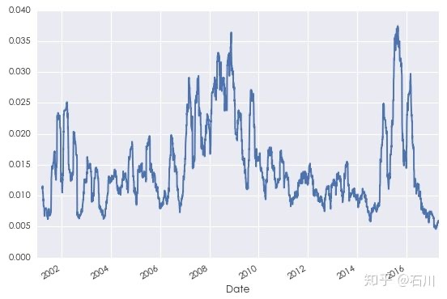
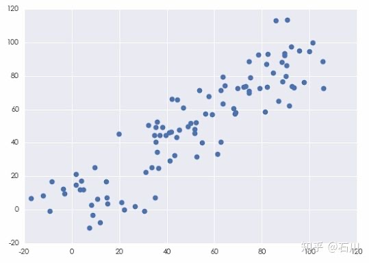
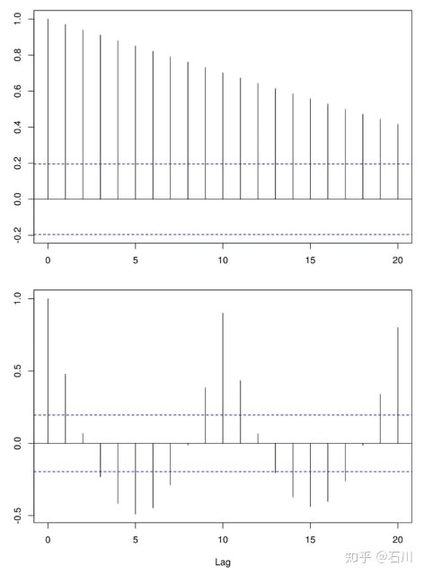
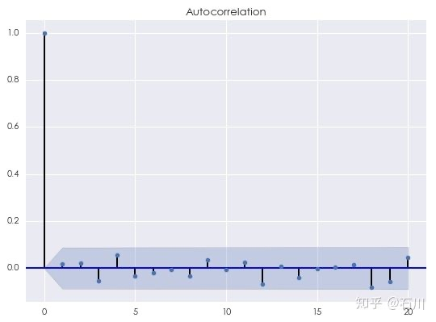

基础篇¶
1 前言¶
时间序列分析（time series analysis）是量化投资中的一门基本技术。时间序列是指在一定时间内按时间顺序测量的某个变量的取值序列。比如变量是股票价格，那么它随时间的变化就是一个时间序列；同样的，如果变量是股票的收益率，则它随时间的变化也是一个时间序列。时间序列分析就是使用统计的手段对这个序列的过去进行分析，以此对该变量的变化特性建模、并对未来进行预测。
时间序列分析试图通过研究过去来预测未来。
时间序列分析在工程学、经济学、气象学、金融学等众多领域有着广泛的应用。在金融学领域，介绍时间序列分析的优秀书籍层出不穷。其中最家喻户晓之一的要数美国芝加哥大学商学院 Ruey S. Tsay 教授撰写的金融时间序列分析 —— Analysis of Financial Time Series（下图，该书也同时有中文版）。
金融时间序列分析要求使用者具备一定的高等数学知识。特别是其中一些高级的模型，如分析波动率的 ARCH/GARCH 模型、极值理论、连续随机过程、状态空间模型等都对使用者的数学水平有着极高的要求。因此，在很多人眼中，金融时间序列分析无疑带着厚厚的面纱，令人望而却步。
然而，如果学习的目的是为了解金融时间序列的特点、熟悉金融时间序列分析的目的、并使用线性但非常实用的模型（比如 ARMA 模型）对金融时间序列进行预测并以此制定量化策略，那么只要具备简单的统计学基础，就完全能够实现这些目标。
出于这个目的，从本周开始，量化核武研究这个专题下将推出四篇文章，深入浅出的介绍金融时间序列分析的相关知识。该系列不会涉及上面提到的那些高级模型；相反的，本系列以对股票收益率建模并构建投资策略为目标，按部就班的把实现这个目标所需要的每一块“积木”清晰地呈献给读者。这四篇文章的结构为：
- 基础篇（本文）：介绍金融时间序列的特性和进行金融时间序列分析的目的；解释时间序列分析中的核心概念：序列相关性（又称自相关性）。
- 初级篇：说明时间序列建模的过程；介绍时间序列分析中的最基本模型：白噪声和随机游走。
- 进阶篇：介绍时间序列分析中常用的线性模型：AR、MA、ARMA 等。
- 应用篇：利用 ARMA 对上证指数收益率序列建模，并以此产生交易信号、构建投资策略，以此展示时间序列分析在量化投资领域的应用。
本系列文章会避免过多罗列晦涩难懂的大数学（但会涉及必要的数学知识），希望带你走入金融时间序列分析的大门，为你今后学习更高级的模型奠定一些基础。
这是写给你的金融时间序列分析。
2 金融时间序列分析¶
为了避免下文中涉及的概念过于抽象，我们假设本文讨论的金融时间序列为投资品的收益率序列。
金融时间序列分析考虑的是金融变量（比如投资品收益率）随时间演变的理论和实践。任何金融时间序列都包含不确定因素，因此统计学的理论和方法在金融时间序列分析中至关重要。金融资产的时间序列常被看作是未知随机变量序列随时间变化的一个实现。通常假设该随机变量序列仅在时间轴上的离散点有定义，则该随机变量序列就是一个离散随机过程。比如股票的日收益率就是离散的时间序列。
在量化投资领域，我们的目标是通过统计手段对投资品的收益率这个时间序列建模，以此推断序列中不同交易日的收益率之间有无任何特征，以此来预测未来的收益率并产生交易信号。
一个时间序列可能存在的特征包括以下几种：
- 趋势：趋势是时间序列在某一方向上持续运动（比如牛市时股市每天都在上涨，股票收益率持续为正；熊市时股市每天都在下跌，股票收益率持续为负）。趋势经常出现在金融时间序列中，特别是大宗商品价格；许多商品交易顾问（CTA）基金在他们的交易算法中都使用了复杂的趋势识别模型。
- 季节变化：许多时间序列中包含季节变化。在金融领域，我们经常看到商品价格的季节性变化，特别是那些与生长季节或温度变化有关的商品，比如天然气。
-
序列相关性：金融时间序列的一个最重要特征是序列相关性（serial correlation），又称为自相关性（autocorrelation）。以投资品的收益率序列为例，我们会经常观察到一段时间内的收益率之间存在正相关或者负相关。此外，波动聚类（volatility clustering）也是一种序列相关性，它意味着高波动的阶段往往伴随着高波动的阶段出现、低波动的阶段往往伴随着低波动的阶段出现，这在量化投资中尤为重要。比如下图为 2001 年到 2017 年上证指数日收益率的标准差，从中可以清晰的看到波动聚类。

-
随机噪声：它是时间序列中除去趋势、季节变化和自相关性之后的剩余随机扰动。由于时间序列存在不确定性，随机噪声总是夹杂在时间序列中，致使时间序列表现出某种震荡式的无规律运动。
量化投资的交易者的目标是利用统计建模来识别金融时间序列中潜在的趋势、季节变化和序列相关性。利用一个好的模型，金融时间序列分析的主要应用包括：
- 预测未来：为了成功交易，我们需要在 统计上 “准确”预测未来的投资品价格或者收益率。
- 序列模拟：一旦发现了金融时间序列的统计特征，我们可以使用它们来模拟时间序列并进行场景分析。这对于估计交易次数、期望交易成本、期望收益率至关重要，从而最终定量的计算一个策略或者投资组合的风险分布和盈利水平。
上文说到，金融时间序列的关系中，最重要的当属自相关性。这是因为我们很容易从一个时间序列中识别出趋势以及季节变换。当除去这些关系后，剩下的时间序列往往看来十分随机。然而对于金融时间序列，比如投资品的收益率，看似随机的时间序列中往往存在着惊人的自相关。对自相关建模并加以利用能够大幅提高交易信号的准确性 配对交易的均值回复策略就是这么一个例子。均值回复策略利用一对投资品价差序列的 负相关性 进行投资，产生做多或者做空的交易信号，实现盈利。
金融时间序列分析的核心就是挖掘该时间序列中的自相关性。¶
本文的下面几节就来介绍如何计算时间序列的自相关性。为此，首先来看两个基础概念：协方差和相关系数。之后会谈及时间序列的稳定性，它是时间序列分析的一个必要前提。最后介绍时间序列的自相关性。
3 协方差和相关系数¶
本节介绍概率论中的基础概念：协方差和相关系数。熟悉它们的读者可跳过。
假设两个随机变量 \(X\) 和 \(Y\) 满足未知的概率分布（可以是同分布也可以是不同的分布）。 \(E[\cdot]\) 为求解数学期望的运算符。\(X\) 和 \(Y\) 的总体协方差（population covariance）为：
其中， \(\mu_X\) 和 \(\mu_Y\) 分别为 \(X\) 和 \(Y\) 的 总体均值（population mean）。
协方差告诉我们两个随机变量是如何一起移动的。
在实际中，由于总体的概率分布未知，我们只能通过 \(X\) 和 \(Y\) 的观测值来计算 样本均值（sample mean）。假设我们各有 \(X\) 和 \(Y\) 的观测值 \(n\) 个，则它们的**样本协方差（sample covariance）** 为：
其中，\(\bar{X}\) 和\(\bar{Y}\) 为 \(X\) 和 \(Y\) 的样本均值。上面公式中右侧之所以除以 \(n-1\) 而非 \(n\) 的原因是，这么做可以保证样本协方差是（未知）总体协方差的一个**无偏估计（unbiased estimator）**。
假设我们随机生成两个随机变量 \(X\) 和 \(Y\) 的序列，它们的散点图如下。

按照上面的公式，\(X\) 和 \(Y\) 的样本协方差为 893.215203。它有什么意义呢？在回答这个问题之前，让我们再来看另外两个变量，我们称之为\(X100\) 和\(Y100\) 。它们分别定义为$X100 = 100\times X $ 和 \(Y100 = 100\times Y\) 。可见，它们仅仅是 \(X\) 和 \(Y\) 各乘以 100 得到的。 \(X100\) 和\(Y100\) 的样本协方差为 8932152.03，这是 \(X\) 和 \(Y\) 的协方差的 10000 倍。然而，如果仅仅因此就得出 \(X100\) 和 \(Y100\) 的相关性高于 \(X\) 和 \(Y\) 的相关性就大错特错了。 事实上，由于 \(X100\) 和 \(Y100\) 是由 \(X\) 和 \(Y\) 分别乘以 100 得到的，因此它们之间的相关性显然和 \(X\) 与 \(Y\) 的相关性相同。
上面这个例子说明使用协方差衡量变量相关性的**致命缺点：协方差是有量纲的，因此它的大小受随机变量本身波动范围的影响**。在上个例子中，当两个随机变量的波动范围扩大 100 倍后，它们的协方差扩大了 10000 倍。因此，人们希望使用某个和协方差有关，但是又是**无量纲**的测量来描述两个随机变量的相关性。最简单的做法就是用变量自身的波动对协方差进行标准化。相关系数（correlation 或者 correlation coefficient）便由此得来。
令 \(\rho\) 表示\(X\) 和 \(Y\) 的**总体相关系数（population correlation）**，它的定义为：
其中 \(\sigma_X\) 和 \(\sigma_Y\) 分别为 \(X\) 和 \(Y\) 的**总体标准差（population standard deviation）**。通过使用 \(X\) 和 \(Y\) 的标准差对它们的协方差归一化，\(\rho\) 的取值范围在 -1 到 +1 之间，即 [-1, +1]：
- $\rho(X,Y) = 1 $ 表示\(X\) 和\(Y\) 之间存在确切的线性正相关；
- $\rho(X,Y) = 0 $ 表示 \(X\) \(Y\) 之间不存在任何线性相关性；
- $\rho(X,Y) = -1 $ 表示 \(X\) \(Y\) 之间存在确切的线性负相关。
值得一提的是，相关系数仅仅刻画\(X\) 和 \(Y\) 之间的线性相关性；它不描述它们之间的（任何）非线性关系。在实际中，由于总体的概率分布未知，我们只能通过\(X\) 和\(Y\) 的观测值来计算 \(X\) 和 \(Y\) 的**样本相关系数（sample correlation）**：
在上面的例子中，无论考虑\(X\) 和\(Y\) 还是\(X100\) 和\(Y100\) （即无论如何缩放 \(X\) 和\(Y\) ），它们的相关系数都是 0.894655，这和我们的预期相符。由于这个数值非常接近 1，它意味着 \(X\) 和 \(Y\) 之间存在很强的线性正相关。
4 时间序列的平稳性¶
平稳性（stationarity）是时间序列分析的基础。
为了通俗的理解平稳性，来看下面这个类比（这是我能想到的最好的例子）。假如某股票的日收益率由转轮盘赌决定：转到不同数字就对应不同的收益率。在每个时刻 \(t\) ，我们都转同一个轮盘赌并确定收益率 \(r_t\) 。只要这个轮盘不变，那么对于所有的 \(t\) ，\(r_t\) 的概率分布都是一样的、不随时间变化。这样的时间序列 \(\{r_t\}\) 就是（严格）平稳的。如果从某个时刻 \(t'\) 开始，轮盘发生了变化（比如轮盘上面的数字变多了），那么显然从 \(t+ \ge t'\) 开始， \(r_t\) 的分布就便随之发生变化，因此时间序列 \(\{r_t\}\) 就不是平稳的。
在数学上，时间序列的**严平稳（strictly stationary）有着更精确的定义：它要求时间序列中任意给定长度的两段子序列都满足相同的联合分布。**这是一个很强的条件，在实际中几乎不可能被满足。**因此我们还有**弱平稳（weakly stationary）**的定义，它要求时间序列满足均值平稳性（stationary in mean）和二阶平稳性（secondary order stationary）**。
如果一个时间序列 \(\{r_t\}\) 满足以下两个条件，则它是弱平稳的：
- 对于所有的时刻 \(t\) ，有 \(E[r_t] = \mu\) ，其中 \(\mu\) 是一个常数。
- 对于所有的时刻 $$ 和任意的间隔 \(k\) ，\(r_t\) 和 \(r_{t-k}\) 的协方差 \(\sigma(r_t,r_{t-k})\)，其中\(\gamma_k\) 与时间\(t\) 无关，它仅仅依赖于间隔 \(k\) 。特别的，当 \(k=0\) 时，这个特性意味着 \(\sigma(r_t,r_t)\) —— \(r_t\) 的方差 —— 不随时间变化，等于一个与时间 \(t\) 无关的常数\(\gamma_0\)，这称为**方差平稳性（stationary in variance）**。
弱平稳假设对于分析投资品收益率至关重要。
为了解释这一点，来看一个例子。假设我们想知道 2017 年 5 月 16 日这天上证指数收益率的均值是多少，而我们的猜想是它来自一个未知的分布。也许你会马上说“查一下 Wind 不就知道了？上证指数那天的收益率是 0.74%”。注意，0.74% 这个数值仅仅是那天上证指数未知收益率分布的一个实现（realization）！它不是均值，因此从时间序列分析的角度来说仅仅知道 0.74% 远远不够。
对于一般的未知概率分布，只要通过进行大量重复性实验，就可以有足够多的独立观测点来进行统计推断（计算均值和方差这些统计量）。**按照这个思路，我们必须把 2017 年 5 月 16 日这一天经历许多遍，得到许多个那天的收益率观测值，然后用这些观测值计算出收益率的均值。**不幸的是，历史只发生一次，时间也一去不复返，我们只能实实在在的经历一遍 2017 年 5 月 16 日，只能得到一个收益率的观测点，即 0.74%。因此这个方法对于金融数据是行不通的。
然而，如果我们假设上证指数的收益率序列满足弱平稳，就柳暗花明了。根据弱平稳假设，上证指数的日收益率序列\(\{r_t\}\) 的均值是一个与时间无关的常数，即 \(E[r_t] = \mu\) 。这样便可以利用一段时间的历史数据来计算出日收益率的均值。 比如我们可以对上证指数在 2017 年交易日的日收益率序列取平均，把它作为对总体均值 \(\mu\) 的一个估计。根据弱平稳性，该平均值也正是 2017 年 5 月 16 日的收益率均值。
同样的道理，在弱平稳的假设下，可以根据历史数据方便的对时间序列的诸多统计量进行推断。在金融文献中，也通常假定投资品收益率序列是弱平稳的。只要有足够多的历史数据，这个假定可以用实证方法验证。比如，我们可以把数据分成若干个子集，并分别计算每个子集的统计量，然后通过统计的手段检验这些来自不同子集的统计量的一致性。
需要说明的是，即便是弱平稳性，有时金融数据也无法满足。回想第二节中那个上证指数日收益率标准差的图，它清晰的说明，在 2001 到 2017 年之间，标准差是随时间变化的。这意味着在这段时间内，收益率序列不满足二阶平稳性。对于此，我们可以通过更复杂的非线性模型对波动率建模（比如 GARCH），又或者可以把时间段细分为更短的区间，使得在每个小区间内的收益率序列尽量满足弱平稳性。
有了上一节和本节的内容做铺垫，下面我们就可以聊聊时间序列的自相关性了。
5 自相关性和自相关函数¶
假设我们有弱平稳的投资品收益率序列 \(\{r_t\}\) 。自相关性考察的是 \(t\) 时刻的收益率 \(r_t\) 和距当前任意间隔 \(k\) 时刻的收益率\(r_{t-k}\) 之间的线性相依关系（\(k\) 的取值是所有 \(\ge 0\) 的整数）。由于 \(r_t\) 和 \(r_{t-k}\) 来自同一个时间序列，因此我们将第三节中的相关系数的概念应用到 \(r_t\) 和 \(r_{t-k}\) 上，便推广出自相关系数（autocorrelation）。
定义：\(r_t\) 和 \(r_{t-k}\) 的相关系数称为 \(r_t\) 的间隔为 \(k\) 的自相关系数。
在弱平稳假设下，这个间隔为 \(k\) 的自相关系数与时间 \(t\) 无关，而仅仅与间隔 \(k\) 有关，由 \(\rho_k\) 表示。由第三节中介绍的相关系数的定义可知：
上面的推导中用到了弱平稳的性质，即协方差和方差平稳性（换句话说，二阶平稳性）。从这个定义不难看出，当 \(k=0\) 时有：
这表示 \(r_t\) 的间隔为 0 的自相关系数恒定为 1。此外， \(\rho_k\) 还有如下的性质：
和第三节一样，上面定义的\(\rho_k\) 是总体的统计特性。实际中，我们仍然只能通过有限的样本数据来计算样本的统计特性。令 \(\zeta_k\) 为与 $rho_k$ 对应的样本统计量，则有：
上式中， \(c_k\) 是 \(r_t\) 的间隔为 \(k\) 的样本自协方差（sample autocovariance of lag \(k\))； \(\zeta_k\) 为 \(r_t\) 的**间隔为 \(k\) 的样本自相关系数（sample autocorrelation of lag \(k\)）**。
如果把 \(\zeta_k\) 看作是 \(k\) 的方程，则它通常被称为样本自相关方程（sample autocorrelation function；同样的，\(\rho_k\) 为总体自相关方程），它刻画了时间序列的重要特性。利用相关图（correlogram）可以清晰地看到 \(\zeta_k\) 是如何随间隔 \(k\) 变化的。
下图为两个假想时间序列的相关图。它们呈现出完全不同结构的自相关性。事实上，第一个相关图的时间序列存在明显的趋势；而第二个相关图的时间序列存在明显的周期性。这两个例子说明相关图可以告诉我们很多时间序列的内在特性。

金融时间序列的相关图虽然远没有这两个假象序列的相关图这么有结构，但相关图在我们对时间序列建模时至关重要。之前已经说过，金融时间序列，特别是收益率序列，最重要的特性是一些不容易被发现的自相关性。（通常股票的收益率序列没有季节性或者明显的趋势性；即便是弱趋势也可以由自相关性反应。）因此，拿来一个收益率序列，只要画出相关图，就可以检测该序列在任何间隔\(k\) 有无统计上显著的自相关性。
对金融时间序列建模，最重要的就是挖掘出该序列中的不同间隔 \(k\) 的自相关性。相关图可以帮助我们判断模型是否合适。 这是因为金融时间序列的特征中往往包括相关性和随机噪声。如果模型很好的捕捉了自相关性，那么原始时间序列与模型拟合的时间序列之间的残差应该近似的等于随机噪声。 残差序列自然也是一个时间序列，因此可以对它画出相关图。**一个标准随机噪声的自相关满足 \(\rho_0 = 1\) 以及 \(\rho_k = 0, k=1,2,3,\cdots\) 即对于任意不为 0 的间隔，随机噪声的自相关均为 0。**下图为一个随机噪声的相关图（我们是用标准正态分布构造了有 500 个点的随机噪声序列）：

关于这个图：
- 显然，间隔为 0 的自相关系数为 1；
- 对于任意的 \(k \ge 1\) ，蓝色的阴影区域为 95% 的置信区间。因此，自相关系数只要没有超过蓝色阴影区域，我们就无法在 5% 的显著性水平下拒绝原假设（原假设为间隔为 \(k\) 的自相关系数为 0）。上图的结果说明当 \(k\) 不为 0 时，随机噪声的自相关系数为 0。
因此，在评价对金融时间序列的建模是否合适时，我们首先找到原始时间序列和它的拟合序列之间的残差序列；然后只要画出这个**残差序列**的相关图就可以看到它是否含有任何模型未考虑的额外自相关性：
如果残差的相关图和上面这个图相似，则可以认为残差是一个随机噪声，而模型已经很好的捕捉了原始时间序列中的自相关性；
如果残差的相关图体现了额外的自相关性，它们将为我们改进已有的模型提供依据，因为这些额外的自相关说明已有模型没有考虑原始时间序列在某些特定间隔上的自相关。
6 下文预告¶
作为金融时间序列分析系列的开篇，本文介绍金融时间序列的特性和进行金融时间序列分析的目的；并解释时间序列分析中的核心概念：自相关性。对金融时间序列建模的核心就是捕捉该序列中不同间隔上的自相关性。相关图可以清晰地刻画任何一个时间序列在不同间隔的自相关性。
在下一篇中，我们将会从最简单的白噪声和随机游走出发，说明它们无法有效刻画投资品收益率序列中体现出来的自相关性。这会促使我们提出更高级的模型，包括 AR，MA，以及 ARMA。这些模型背后的理论是什么？如何正确的挑选模型的参数以构建最适当的模型？这些将会在本系列后面几篇文章中探讨。
（全文完）
免责声明： 文章内容不可视为投资意见。市场有风险，入市需谨慎。